Glyn Wilcox · Ska Au Go Go
Six concepts for Glyn's all-in-one site, which covers him as a singer, a vinyl DJ and a Palm Torbay radio presenter. Two are elegant, two are modern, and two are built from his own branding.
The Late Session
A Kingston supper club after midnight, with brass, ink and a slowly spinning 7".
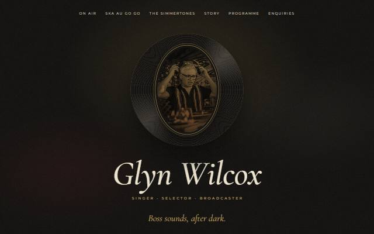
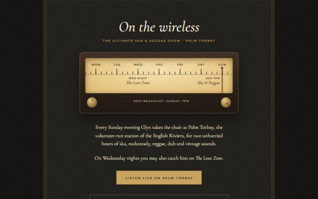
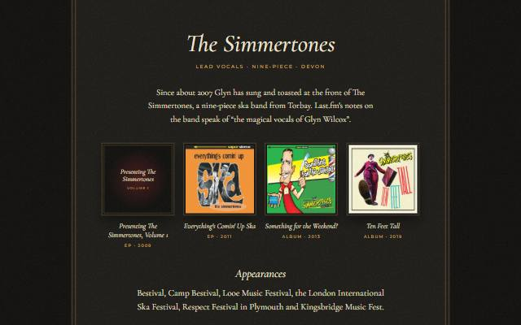
Liner Notes
An editorial reissue booklet with a typographic timeline and a catalogue-style discography.
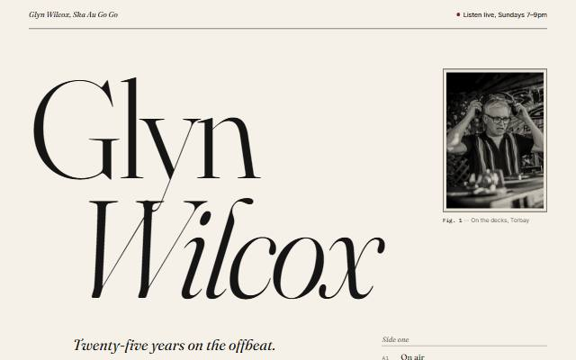
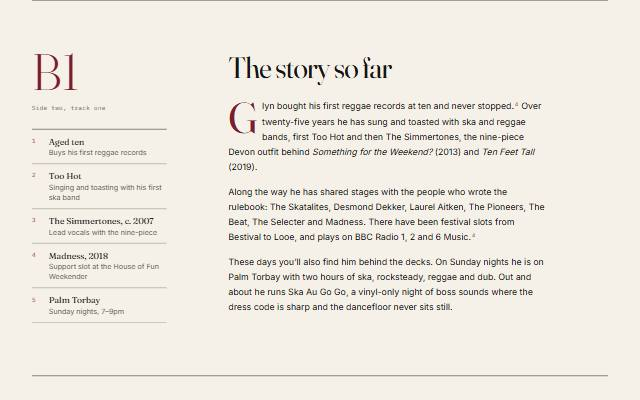
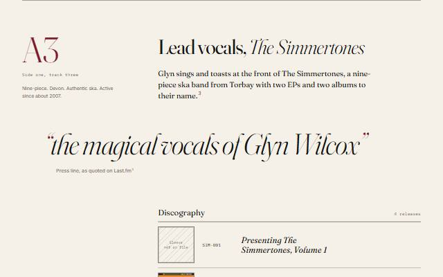
Offbeat
A kinetic gig poster where everything moves on the offbeat.
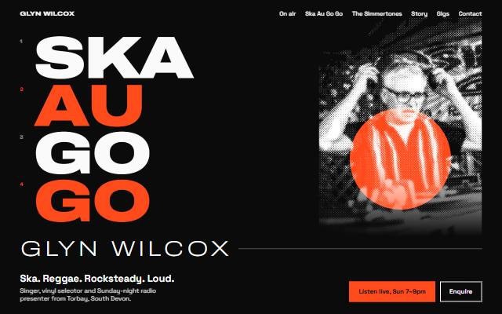
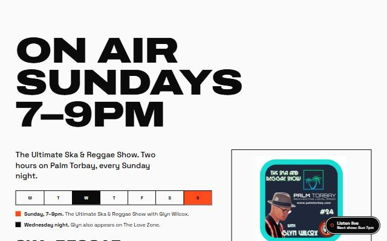
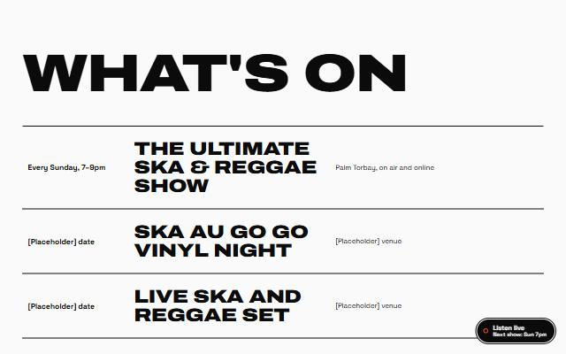
The Selector
A radio-first listening hub with a live countdown to Sunday 7pm.
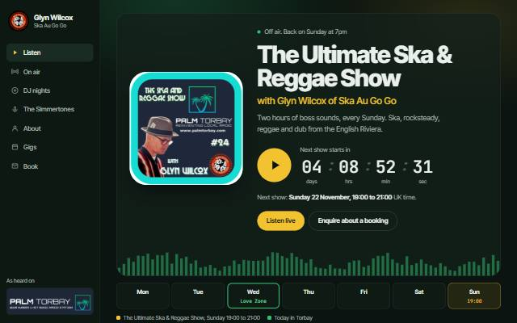
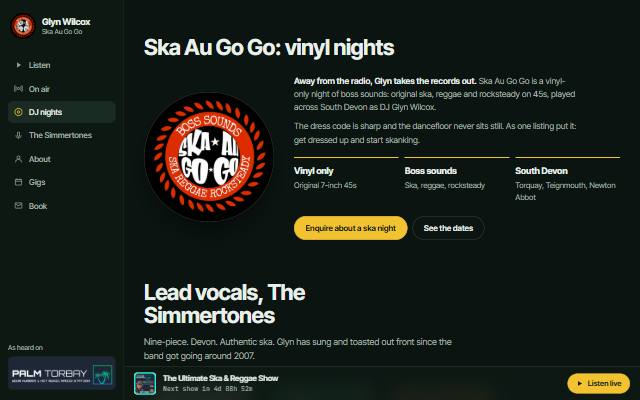
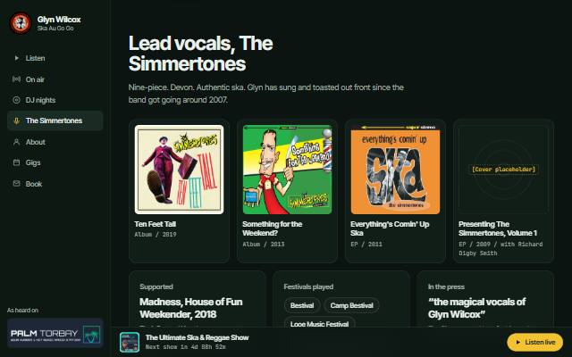
Boss Sounds
Built from his Ska Au Go Go roundel, in the style of a 1960s Jamaican 7" label.
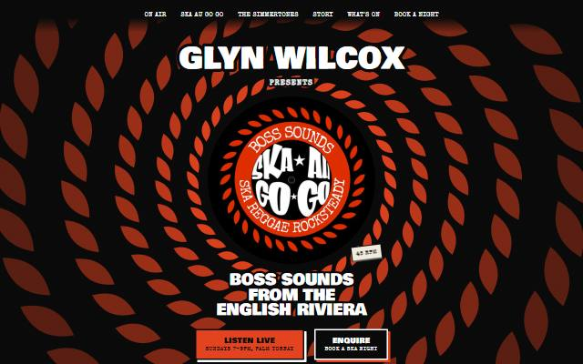
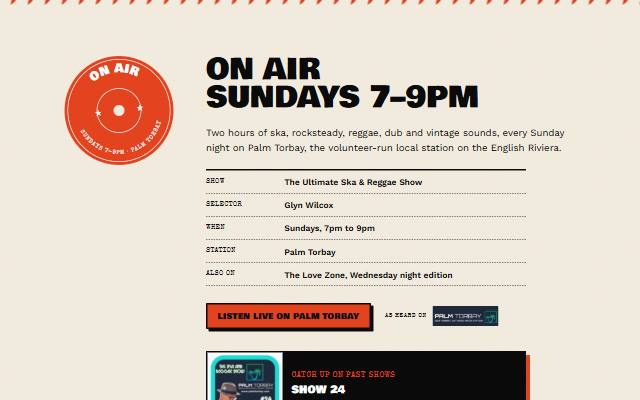
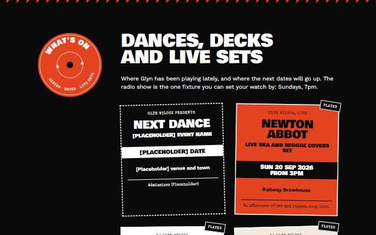
Ten Feet Tall
A Two-Tone Riviera look taken from The Simmertones' album art and his mod style.
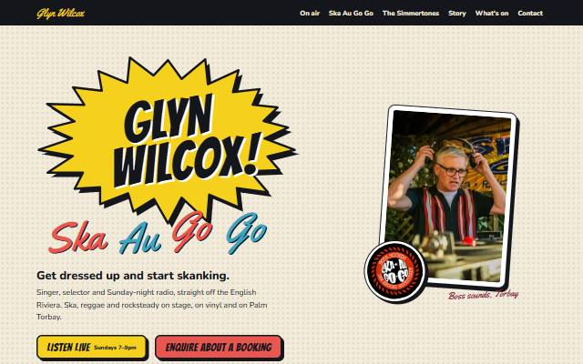
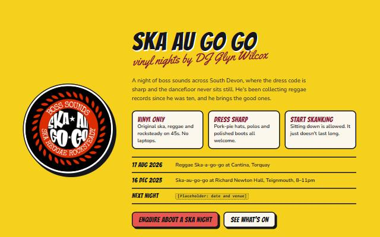
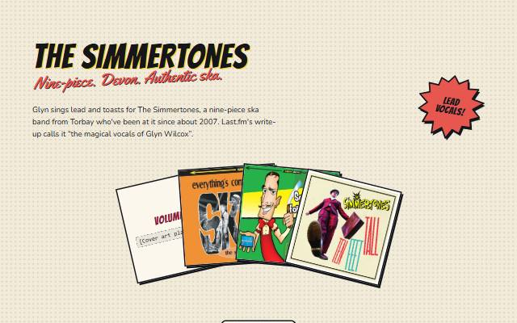